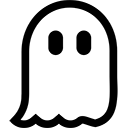

Marvel Noir (2009 - 2010)
Various

Marvel Noir is a Marvel Comics alternative continuity combining elements of film noir and pulp fiction with the Marvel Universe. The central premise of the mini-series replaces super powers with driven, noir-flavoured characterisation.
Fans of the 2018 film Spider-Man: Into The Spider-Verse may recognise Spider-Man Noir; however, we strongly recommend starting with Daredevil Noir.

Descender (2015 - 2018)
Jeff Lemire (Writer); Dustin Nguyen (Artist)

Young Robot boy TIM-21 and his companions struggle to stay alive in a universe where all androids have been outlawed and bounty hunters lurk on every planet. Written by award-winning creator, Jeff Lemire, Descender is a rip-roaring and heart-felt cosmic odyssey. Lemire pits humanity against machine, and world against world, to create a sprawling epic.
Hawkeye (2012 - 2015)
Matt Fraction (Writer); David Aja (Artist)

While Hawkeye may be jam-packed with action, it is almost entirely with mobsters and henchmen, never supervillains. The main thrust of the overarching storyline isn’t the end of the world or a gigantic evil plot — it’s Clint Barton protecting the residents of his apartment block from the Tracksuit Mafia. Heck, even right down to Hawkeye’s stripped down redesign (one of the first permanent major costume changes for the character in his entire history), Hawkeye grounds itself in a sense of normalcy, tucked away from the world of Avengers and superpowers.
Sheets (2018)
Brenna Thummler
Marjorie Glatt feels like a ghost; Wendell is a ghost.
When their worlds collide, Marjorie is confronted by unexplainable disasters as Wendell transforms Glatt’s Laundry into his midnight playground, appearing as a mere sheet during the day. While Wendell attempts to create a new afterlife for himself, he unknowingly sabotages the life that Marjorie is struggling to maintain.
Teen Titans: Raven (2019)
Kami Garcia (Author), Gabriel Picolo (Artist)

When a tragic accident takes the life of 17-year-old Raven Roth's foster mom—and Raven's memory—she moves to New Orleans to recover and finish her senior year of high school.
Starting over isn't easy. Raven remembers everyday stuff like how to solve math equations and make pasta, but she can't remember her favorite song or who she was before the accident. And when impossible things start happening, Raven begins to think it might even be better not to know who she was before.